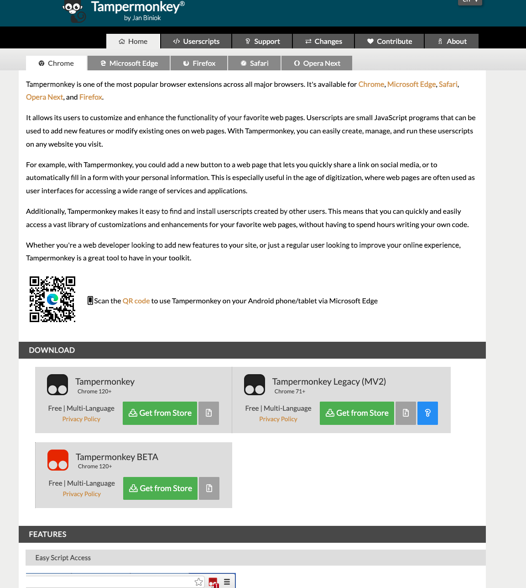
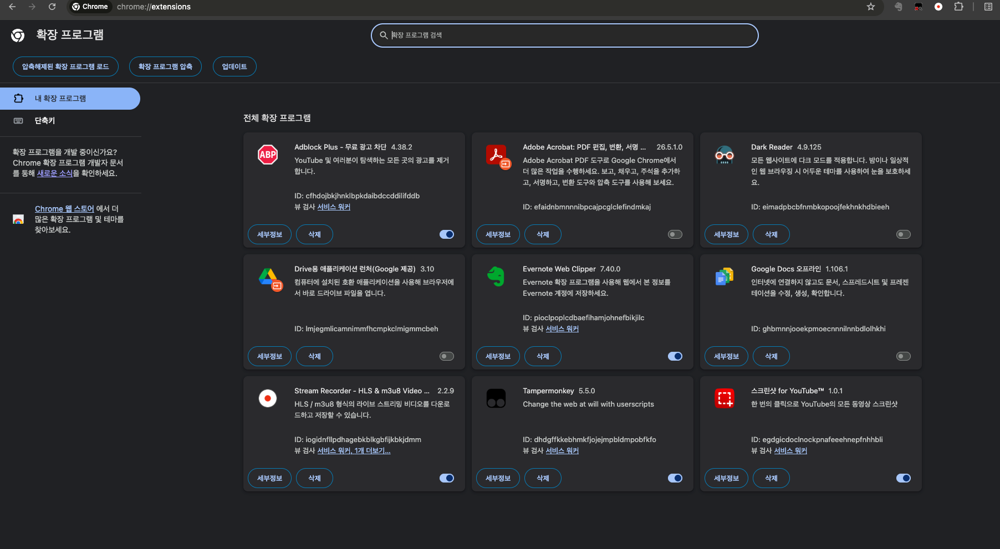
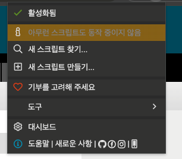
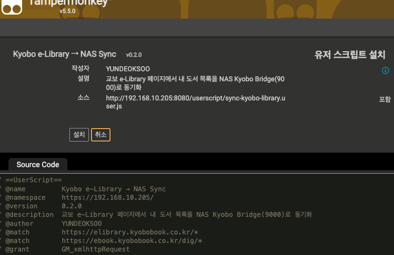
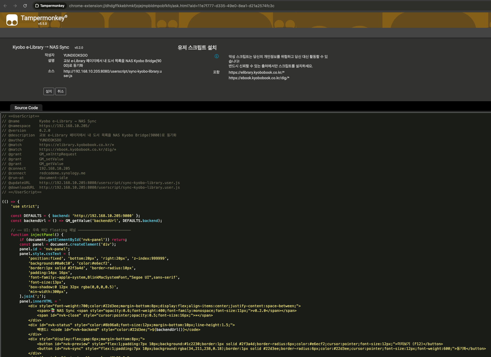
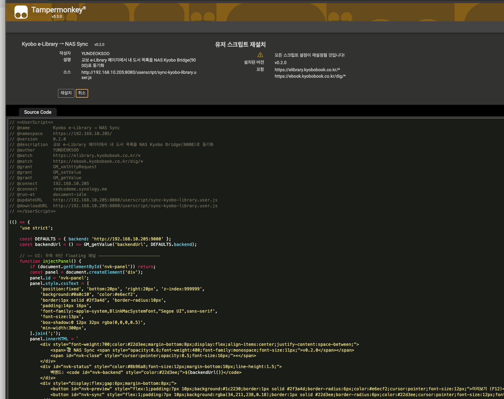
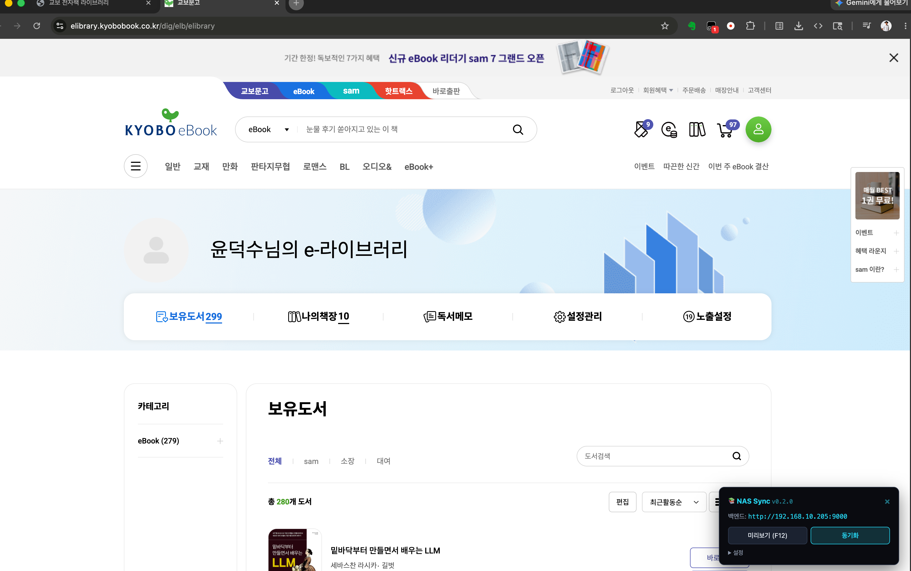
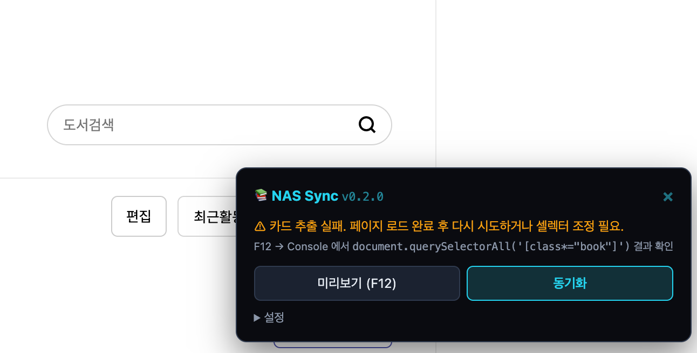
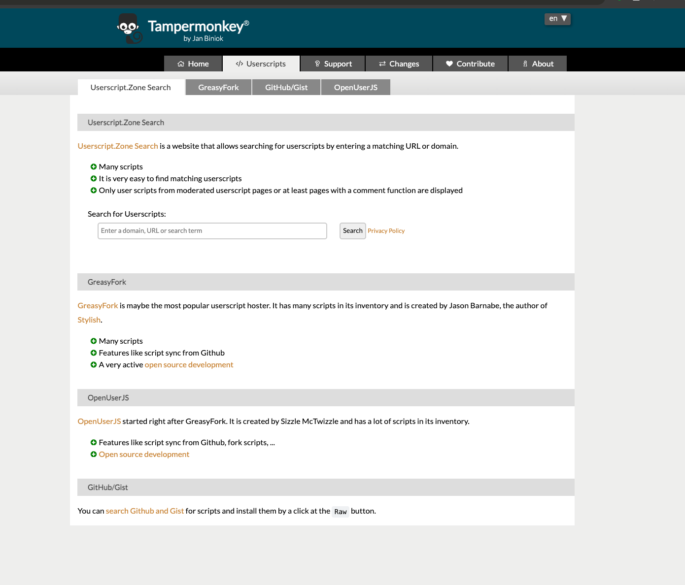

Tampermonkey 확장 + 교보 e-Library 동기화 Userscript 설치 — 한 번이면 끝.
교보문고 사이트는 SPA(Single Page App)라 일반적인 백엔드 자동 로그인이 어렵습니다. 대신 본인 브라우저의 로그인 세션을 그대로 활용하는 Tampermonkey 확장 + Userscript 방식을 사용합니다. 처음 한 번만 설치하면 이후로는 클릭 한 번으로 동기화 가능합니다.

Tampermonkey가 외부 URL의 Userscript를 설치하려면 Chrome의 개발자 모드가 필요합니다.
chrome://extensions/ 입력 → Enter[압축해제된 확장 프로그램 로드] 같은 버튼들이 나타남)edge://extensions/, 좌측 하단 [개발자 모드] 토글입니다.

추가로 브라우저 우상단 Tampermonkey 검은 아이콘을 클릭하면 메뉴가 뜨고 "활성화됨" 상태로 표시되어야 합니다. 이 시점에는 "아무런 스크립트도 동작 중이지 않음"이 정상 — STEP 3 에서 우리 Userscript 가 추가됩니다.

📜 sync-kyobo-library.user.js 바로 설치 →
Kyobo e-Library → NAS Sync, 버전 v0.2.0,
작성자 YUNDEOKSOO, 소스 http://192.168.10.205:8080/userscript/... 가 보이고
우측 포함 에 https://elibrary.kyobobook.co.kr/*,
https://ebook.kyobobook.co.kr/dig/* 두 도메인이 들어 있어야 정상.

chrome-extension://...ask.html?aid=... 가 보여도 정상 —
이게 별도 권한 요청 페이지가 아니라 위에 보이는 그 Tampermonkey 설치 페이지의 실제 URL입니다.
그대로 좌측 [설치] 만 누르면 끝.

chrome-extension://<ID>/ask.html?aid=<UUID> 가 보이는 게 정상ⓘ 정보 아이콘)가 표시됩니다.
위험한 경고가 아니라 GM_setValue 로 저장한 백엔드 URL 설정 등이
기본값으로 돌아간다는 뜻 — 첫 설치라면 그대로 [재설치] 클릭.


[NVK] 진단용 로그 캡처 후
개발자에게 알려주면 셀렉터 보정 가능. v0.3.0 부터는 진단 dump 가 훨씬 풍부합니다.

http://192.168.10.205:9000/health 직접 호출해 응답 확인.